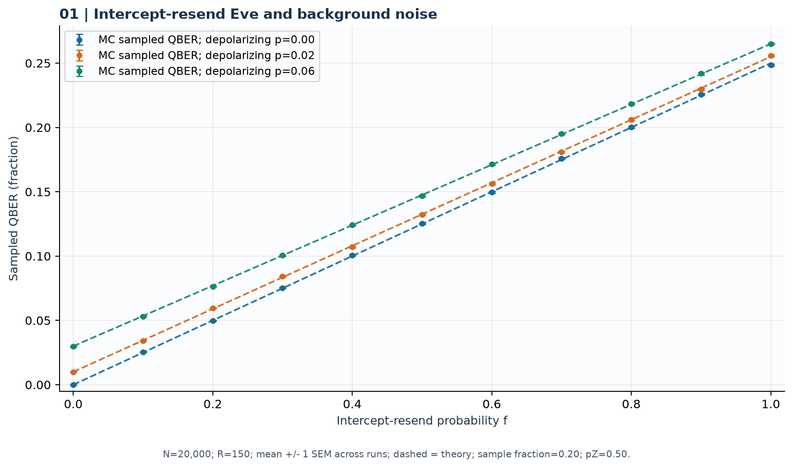
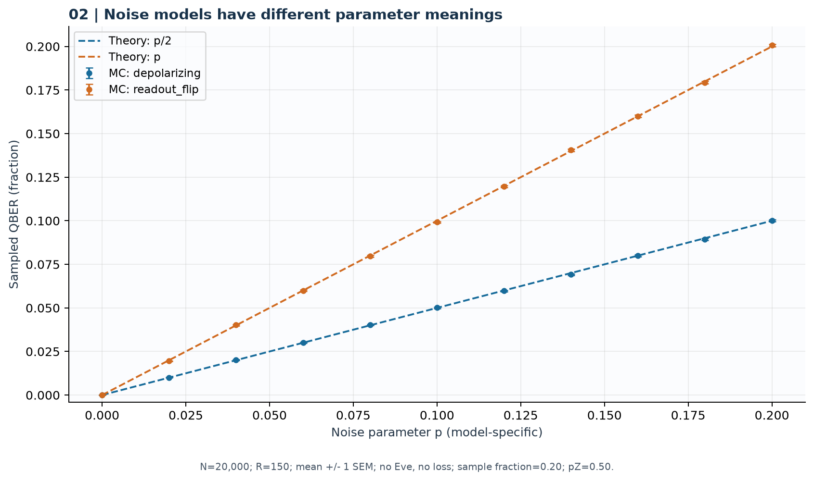
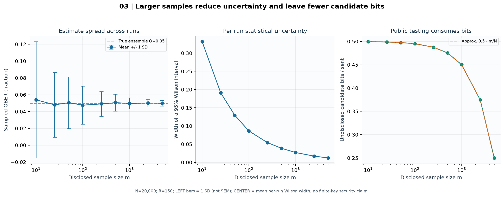
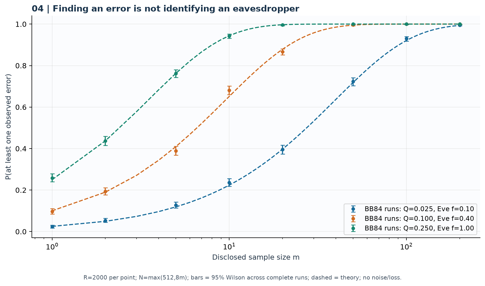
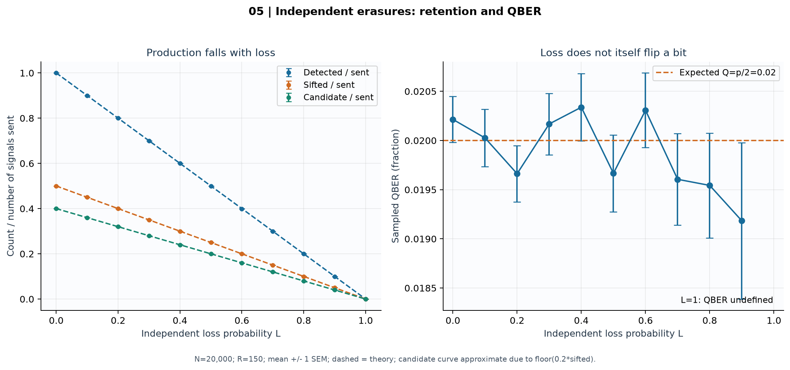
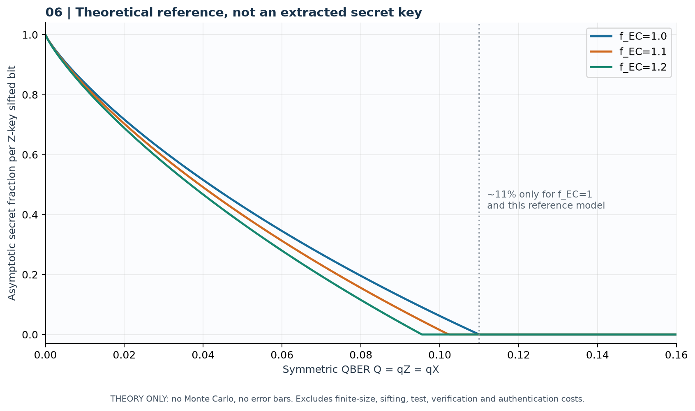

QBER theo tỷ lệ Eve
Eve chặn–đo–gửi lại với ba mức nhiễu depolarizing.

N=20,000; R=150; mean +/- 1 SEM across runs; dashed = theory; sample fraction=0.20; pZ=0.50.
Đọc kết quả
- Eve chặn toàn bộ, không nhiễu: QBER mẫu trung bình 24.8601%; kỳ vọng 25%.
- Sai lệch tuyệt đối lớn nhất giữa trung bình mẫu và lý thuyết trên lưới: 0.1399 điểm phần trăm.
- Nhiễu và tấn công kết hợp theo e+c−2ec; QBER không xác định danh tính tác nhân gây lỗi.
QBER theo mô hình nhiễu
Phân biệt depolarizing rho → (1−p)rho+pI/2 với lật bit đầu ra Bob.

N=20,000; R=150; mean +/- 1 SEM; no Eve, no loss; sample fraction=0.20; pZ=0.50.
Đọc kết quả
- Tại p=0.20: depolarizing cho QBER mẫu 10.019%, readout_flip 20.062%.
- Lý thuyết tương ứng là p/2 và p. Không dùng cùng p để tuyên bố hai kênh có cùng mức lỗi.
Bất định QBER và chi phí lấy mẫu
Lấy mẫu công khai từ đầu ra BB84; Eve f=0.20, không nhiễu/mất, Q kỳ vọng 0.05.

N=20,000; R=150; LEFT bars = 1 SD (not SEM); CENTER = mean per-run Wilson width; no finite-key security claim.
Đọc kết quả
- Khi m tăng từ 10 lên 5000, độ rộng Wilson trung bình đổi từ 0.3316 thành 0.0121.
- Ở m=5000, phần ứng viên chưa công bố trung bình bằng 25.00% số tín hiệu phát.
- Độ lệch chuẩn giữa các lần chạy khác với sai số chuẩn của trung bình; Wilson 95% không phải bảo đảm finite-key QKD.
Xác suất thấy ít nhất một lỗi
Mỗi điểm chạy giao thức BB84 nhiều lần; so sánh với 1−(1−Q)^m trong ensemble i.i.d.

R=2000 per point; N=max(512,8m); bars = 95% Wilson across complete runs; dashed = theory; no noise/loss.
Đọc kết quả
- Q=2.5%, m=20: xác suất thấy lỗi mô phỏng 39.55%; lý thuyết 39.73%.
- Có 0 lần không đủ cỡ mẫu; các lần đó được lưu dữ liệu và loại khỏi mẫu số ước lượng xác suất.
- Đây là xác suất tìm thấy lỗi, không phải xác suất chứng minh Eve hiện diện; mẫu nhỏ có thể bỏ sót lỗi.
Mất tín hiệu và tỷ lệ giữ lại
Mất tín hiệu độc lập; nhiễu nền depolarizing p=0.04 giữ cố định; không Eve.

N=20,000; R=150; mean +/- 1 SEM; dashed = theory; candidate curve approximate due to floor(0.2*sifted).
Đọc kết quả
- Tỷ lệ sifted/phát kỳ vọng bằng (1−L)/2; phần ứng viên còn lại xấp xỉ 0.4(1−L).
- Nhiễu nền cho QBER kỳ vọng 2% dù xác suất mất thay đổi; ít tín hiệu sống sót làm ước lượng dao động hơn.
- Tại L=1 không có bit được phát hiện; QBER là không xác định, không được thay bằng 0.
Tỷ lệ khóa tiệm cận tham chiếu
r∞ = max(0, 1−h2(Q)−fEC h2(Q)); mô hình lý tưởng, sai số bit/pha đối xứng.

THEORY ONLY: no Monte Carlo, no error bars. Excludes finite-size, sifting, test, verification and authentication costs.
Đọc kết quả
- Khi hiệu suất sửa lỗi kém hơn (fEC tăng), phần khóa tiệm cận tham chiếu giảm.
- Mốc xấp xỉ 11% chỉ thuộc trường hợp fEC=1 với giả định đang nêu; không là ngưỡng chứng nhận phổ quát.
- Chương trình chưa sửa lỗi/khuếch đại riêng tư; các đường này không phải khóa bí mật thực tế được sinh ra.
Phương pháp, giới hạn và tái lập
Mô hình dùng qubit lý tưởng, Eve chặn–đo–gửi lại với cơ sở đều và mất tín hiệu độc lập. QBER toàn bộ là thông tin chẩn đoán của simulator; Alice/Bob chỉ công bố mẫu. Khoảng Wilson minh họa bất định nhị thức, không phải chứng minh an toàn khóa hữu hạn. Bit ứng viên còn lại chưa trải qua xác thực, sửa lỗi, xác minh và khuếch đại riêng tư. QBER thấp không chứng minh không có Eve; thấy lỗi không xác định tác nhân gây lỗi.
Preset: standard · Thời gian tính toán: 21.8 giây. Python 3.12.14; NumPy 2.3.5; Matplotlib 3.11.2.
Dùng đúng phiên bản và mã nguồn trong metadata để đối chiếu số liệu:
python -m bb84 experiments --preset standard --output results-reproduced --seed 84 --signals 20000 --repetitions 150Cấu hình, phiên bản, mã băm nguồn ↗ · Bản kết quả Markdown ↗
Nền tảng: Shor–Preskill (2000); Scarani và cộng sự (2009). Đọc docs/SCIENCE.md trong bộ mã để xem dẫn xuất và giả định.